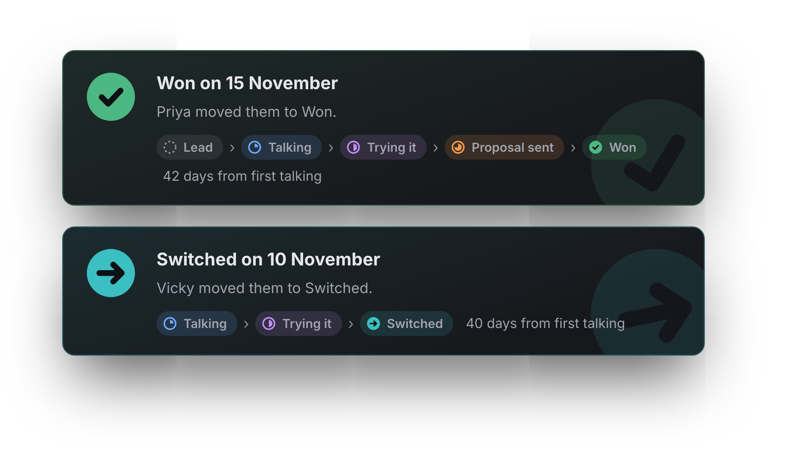
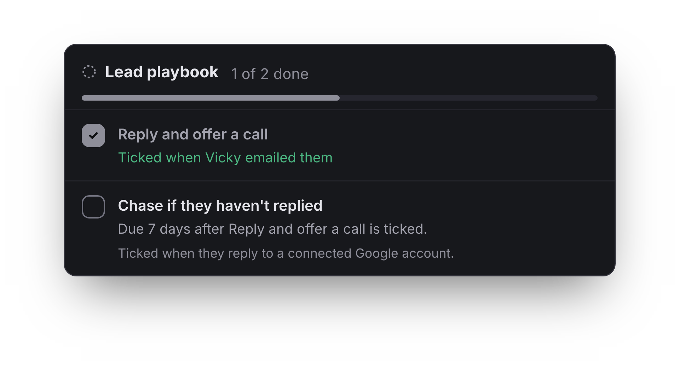
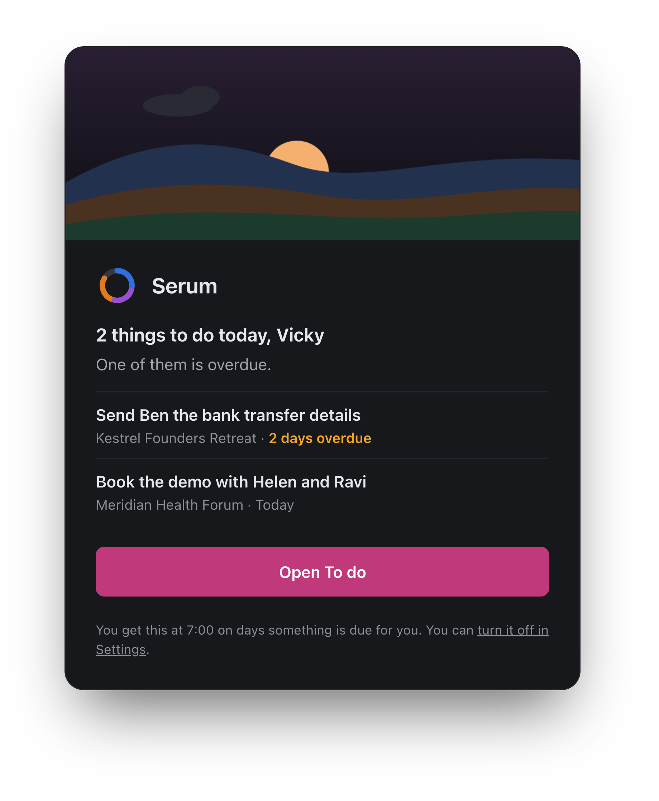
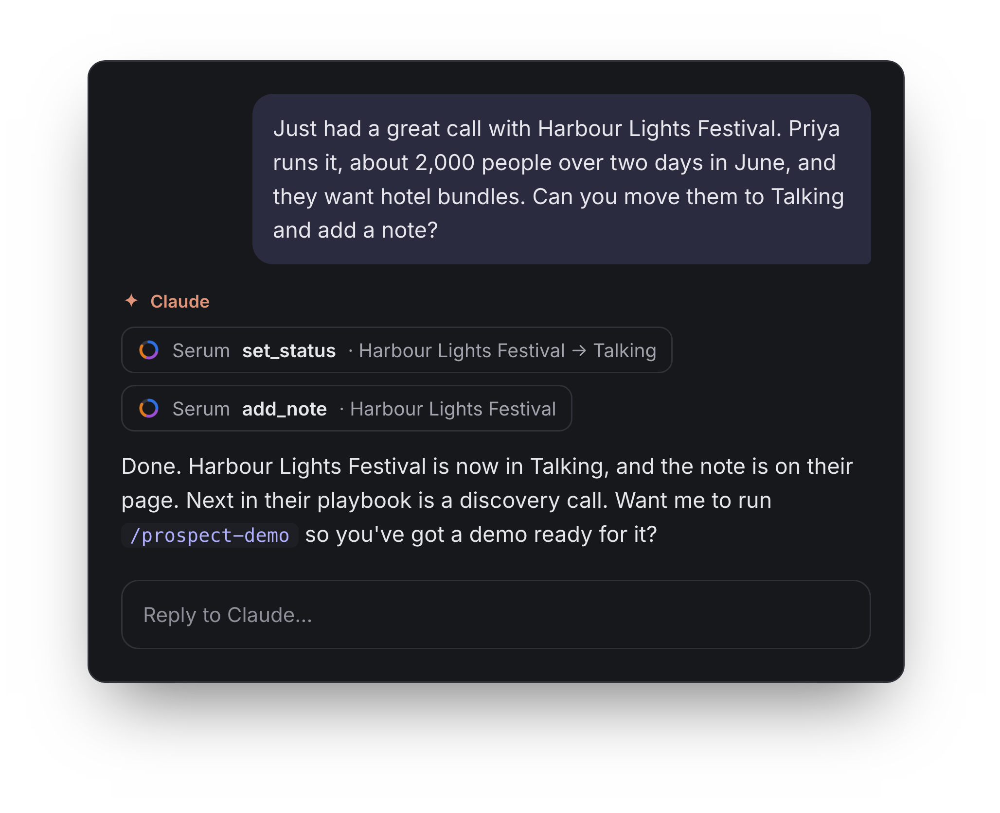
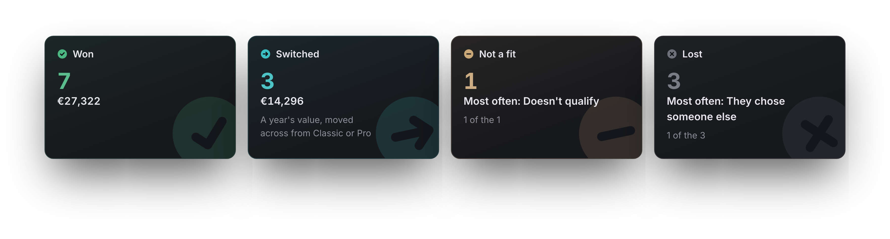

A lightweight CRM and integrated sales playbook I built for the team at Tito to stay on top of our pipeline.
Interactive demo with made-up data. Open in full screen

The sales funnel looks different for a brand new lead versus an existing customer switching from an older version of Tito. So the playbook steps change depending on where the prospect came from.

People who submit an enquiry via the Tito website are added to Serum automatically, and it connects to our email, calendar and third-party support tool, so it knows when we've emailed a prospect and when they've replied. It ticks off the playbook step for us, so nobody has to remember to.

Any outstanding playbook steps due today show in one list alongside to-dos the team adds manually. Serum sends an optional email at 7am to each teammate with their day's tasks, on days there's something due.

We're already using Claude throughout the day, so now we can ask it to create or update a prospect, or even use skills we've set up, like /prospect-demo, and capture the details in Serum.

What did we win, are they paying yet, where do our best customers come from, and why did we lose the ones we lost?
Serum is one Go binary and one SQLite database running on CARLOS, a system for building better web apps with AI agents. I built it with Claude Code in under a week, in a language I'd never written before.
I wrote up the whole story, including the decisions I made (and unmade) along the way, on my blog.